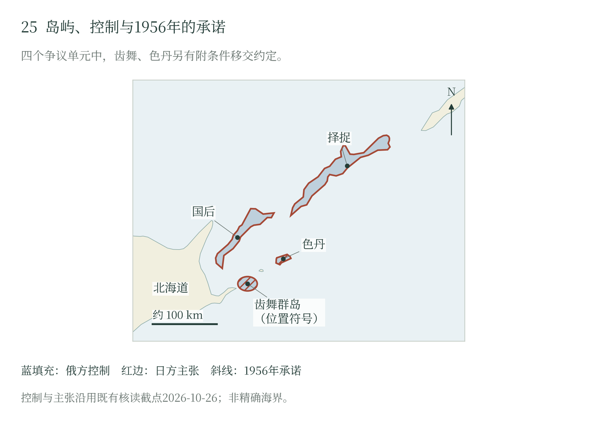

第十八章 战后国际关系与和平的条件
正常化的阶段目标
1956年，日苏结束战争状态，恢复外交联系，并为人员释放和失踪者调查作出新安排。和平条约和领土问题留待继续交涉。此后几十年，一些事情已经办成，一些承诺仍在等候兑现。两种进度，构成了战后日苏、日俄关系的曲折。
1956年10月19日签署的《日苏共同宣言》，在12月12日交换批准书后生效。第一项终止战争状态，第二项恢复外交及领事关系；第五项处理在苏被判罪日本人的释放遣返，并承诺继续调查失踪者。第九项另行规定继续和平条约谈判，并将齿舞群岛与色丹岛的实际移交置于缔结和平条约之后。国家关系、人员处理和领土安排由此获得不同的时间表。〔1〕
宣言还规定互换大使，通过外交渠道办理领事馆设置，恢复关系由此有了代表机关和人员安排。前章所述1956年末遣返发生在这一转折之后，人员释放取得新约定，失踪者调查得以继续，领土分歧则留在谈判中。先办成这些事，使其成果可以早于和平条约抵达人们的生活。〔2〕
第九项把尚待履行的部分写得很具体：苏联同意移交齿舞、色丹，实际移交以缔结和平条约为前提；国后、择捉没有同样的移交约定。移交承诺与实现条件并存，后来的分歧围绕这些条件展开。已经恢复的外交关系保留了交涉场所，未来领土安排仍取决于双方达成进一步合意。〔3〕
安全安排进入领土争议
1960年，新的日美安全条约签署后，苏方备忘录把驻日外国军队问题直接带入领土安排。苏方宣称，新条约针对苏联和中国，移交岛屿可能扩大外国军队能够使用的地域；因此提出，全部外国军队撤离日本并缔结日苏和平条约以后，才移交齿舞与色丹。这项附加条件由苏方单方面提出。〔4〕
日方答复强调，共同宣言已经过两国批准，属于正式国际约定；1956年签署时，美军驻日和日美安保体制已经存在。日方据此反对苏方单方面改变内容，并继续提出自身领土要求。双方围绕条约义务的争论，遂同日本的联盟选择和苏联对远东安全的判断交织起来。〔5〕
全部外国军队撤出日本这一条件，把领土交涉推到了日本的联盟选择面前。日方要求苏方履行已经批准的约定，苏方则以新的安全判断追加条件。两国曾经作出的移交承诺，从此更直接地受日美苏三边关系牵动，东京接受方案的政治成本也随之提高。
一九九三年：重建谈判框架
冷战结束后，1993年《东京宣言》把新的关系前景同历史争议联系起来。文件第二项明确列出择捉、国后、色丹、齿舞，确认就这些岛屿的归属进行认真谈判，并同意依据历史与法律事实、双方合意形成的文件及法与正义原则，继续争取通过解决这一问题缔结和平条约。〔6〕
同一项确认俄罗斯联邦延续苏联的国家身份，日苏条约和其他国际约定继续适用于日俄关系。既有文件重新成为共同谈判基础，四岛的归属也被明确列为谈判对象。政治制度变化以后，双方仍从同一组文书继续交涉，具体归属与履行方式留待进一步合意。
东京宣言还把政治对话、军控、防扩散、核材料管理和地区安全列入两国关系。领土谈判陷于僵持时，政府仍可在这些事务上继续合作。接触的门路多了，牵动关系的事情也多了；两国越来越须在更大的安全环境中经营彼此的关系。 〔7〕
二〇〇一年与二〇一八年：重新使用既有文件
2001年3月25日《伊尔库茨克声明》，将1956年共同宣言明确称为设定和平条约谈判起点的基本法律文件，同时重申依据1993年东京宣言，通过解决四岛归属问题缔结和平条约。声明并列既有文书，要求寻求双方可以接受的解决方式，并继续围绕岛屿开展合作、增进公众对和平条约意义的理解。 〔8〕
声明回顾了曾以2000年为缔约期限的克拉斯诺亚尔斯克合意。期限已经过去，到了2001年，双方仍在约定继续谈判、尽早确定前进方向。首脑能够给交涉定下日期，具体条件终须逐项谈妥。1956年的承诺与1993年的框架因此继续留在桌上，供下一次谈判接着使用。 〔9〕
2003年《日俄行动计划》进一步配置执行渠道：首脑、外长、国防部门和业务层接触，和平条约联合委员会及边界划定、共同经济活动分委会，人员访问与渔业合作，分别列入议程。防务部分记载舰艇互访、搜救演习的实践，并把依据1993年海上事件协定举行年度磋商列为后续工作。政治意向由此落到主管机关、会谈层次和反复办理的业务中。〔10〕
2018年11月新加坡会谈后，日方通报两位领导人同意以1956年共同宣言为基础加速和平条约谈判。通报还记载，共同经济活动应以不损害双方各自法律立场的方式推进；原岛民人道措施与防务部门建立信任，也属于会谈内容。谈判被重新聚焦到既有法律起点，合作项目则试图在保留立场的条件下先行开展。〔11〕
文件同时把合作安排成维持接触的工作：人员相遇、机关会谈、经济项目和防务交流，分别产生继续往来的利益。2018年通报保留双方的法律立场，使共同项目获得讨论空间，管辖和最终归属仍留待政治交涉。项目能否实施、可以推进到哪一步，由双方就具体规则形成的合意决定。
二〇二二年以后的收缩与有限联系
俄罗斯全面入侵乌克兰以后，日本参与对俄制裁，双边关系显著恶化。2022年3月21日，俄外交部宣布不再继续和平条约谈判，停止有关免签访问并退出岛屿共同经济活动对话。RBC当日转述声明，将俄方理由记为日本的制裁和“不友好”政策。谈判、人员交流与合作项目在同一次决定中收缩，显示原先分列的业务能够被更高层次的安全对立重新连接起来。〔12〕
日本2026年《外交青书》继续记述上述变化，并称俄方于2022年9月还停止有关自由访问和四岛交流协议的效力。日方将局势恶化归因于俄罗斯对乌克兰的侵略，反对俄方把责任归于日本，仍以解决四岛归属、缔结和平条约为政策目标。两方对中止交涉的责任解释各有明确出处。 〔13〕
领土主张继续对立。日本政府称上述四岛为其“固有领土”，认为俄方占据违反其主权；2026年8月18日Interfax转述俄外交部声明，俄方坚持对南千岛的主权和管辖权。当前岛屿由俄方控制，两种主张各有当事方。1956年的移交条款、1993年的谈判范围与当期主权表述，分别记录既有承诺、共同交涉对象和当前政治立场。 〔14〕
截至2026年10月28日实际查到的材料，还显示了有限沟通的存在。日本外务省10月21日通报，前一日两国有关局长在莫斯科会谈，日方提出其立场，双方同意在关系严峻的情况下继续沟通。该通报所确认的是外交接触与继续交流意见，和平条约谈判的恢复另待相应决定。〔15〕
不同领域的收缩程度仍有差别。2026年青书记载，2025年依据部分渔业协定及贝壳岛海带民间安排的作业继续，四岛周边水域作业框架下的操业则尚未恢复。日方继续在适当范围接收留学生、支持日语教育，原岛民访问和墓参仍是要求恢复的事项。相同的总体关系之下，有的事务保留执行，有的陷于中断；主管机关、适用规则和政治敏感程度共同影响各自的处境。〔16〕
渔业、教育和家庭往来保存着具体利益，部分事务也在关系恶化后延续。其余事务的中断显示这些利益对高层安全判断的约束有限，各领域维持接触的能力也有差别。
武装事件与危机管控
海上日常活动可以直接暴露这种分层关系。日本海上保安厅2007年报告记载，2006年8月16日俄罗斯警备艇对第31吉进丸开火，一名船员死亡。渔业同时涉及居民生计、管辖主张和执法权力，政治分歧在一次现场处置中转化为人命代价。〔17〕
2024年9月23日，日本防卫省通报俄军IL-38三次进入礼文岛北侧日本领海上空。翌日记者会称，日方使用热焰弹警告，此后未再实施包括警告射击在内的进一步措施。热焰弹与实弹警告射击属于不同层次的应对。〔18〕
警备艇面对渔船，军机面对前来识别和警告的飞机，各有任务，也各有升级的危险。现场留给判断的时间很短，外交机关对争议的解释往往还在后面。一道能够听懂的警告、一套双方熟悉的救助程序，可以为人员脱离危险争取余地。和平时期的一次开火或危险接近，已经足以让人付出代价。
2003年行动计划已有海上事件协定年度磋商、舰艇互访和搜救演习，说明处理风险曾经成为专门业务。此类安排的实际作用，来自参加者反复接触、识别程序和执行经验。文件名称可以延续，联系人、权限和训练却依赖持续维护；一旦日常合作收缩，历史上建立的机制是否仍可使用，就成为影响现场处置的具体条件。〔19〕
阶段安排的成效与和平条件
一九五六年最扎实的成果，是恢复外交并办理人员释放。被拘束者得以归国，失踪者调查有了继续交涉的渠道。两国在长久争议中先把这些事办成，使正常化有了人们能够感受的内容。 〔20〕
被延后的承诺则处境不同。齿舞、色丹的移交等待和平条约，随后又被苏方同日美安保问题相连；二〇一八年保留双方立场的共同项目交涉，到二〇二二年又随总体关系一同中断。阶段安排为眼前打开通道，也把一部分困难留给未来。局势一变，尚未兑现的部分最容易重新成为筹码。〔21〕
最终的领土安排要同时处理主权主张、居民生活与军事用途。日本的联盟关系和俄罗斯的安全计算，都进入双方对让步的估量。既有文书使谈判有据可循，具体方案仍须说明谁来管理、义务怎样履行、出现分歧后由何渠道继续交涉。首脑会谈可以打开议程，持久的安排还要经受这些问题的检验。〔22〕
在大问题悬而未决的年月里，亲属仍要寻找墓地，渔民仍要谋生，双方也仍会在海空相遇。政府保留哪些联系，直接影响这些人的生活。让家属取得一份死亡记录、使访问能够成行、在危险接近时传清一道警告，都是可以选择去做的事。和平的价值也在这里受检验：它给普通人留下多少安全、消息与往来的余地。
当期叙述沿用第六轮截至2026年10月28日的复核。文书层级、俄方转述与事件记录范围，见《专题参考附录》

1956年共同宣言第九项对齿舞群岛与色丹岛写下移交承诺，并把实际移交放在缔结和平条约之后。图中四个单元的地理位置，与控制、主权主张、附条件承诺三种标记相互对应。
随文简图 · 自然地理底图：Natural Earth；历史依据见本章注及大图25逐图来源。大图25（图册第25页）
本章注释
- 〔1〕 C003，第一、二、五、九、十项及生效说明 ↩
- 〔2〕 C003，第二、五项；C005，第六节第2小节 ↩
- 〔3〕 C003，第九项；C009，第4—5节 ↩
- 〔4〕 C009，第4节 ↩
- 〔5〕 C009，第5节 ↩
- 〔6〕 C010，第二项 ↩
- 〔7〕 C010，第三—五项 ↩
- 〔8〕 C501，主体第1—6点 ↩
- 〔9〕 C501，开头第3段及主体第1—4点 ↩
- 〔10〕 C503，第1、2、5节 ↩
- 〔11〕 C502，第2、4节 ↩
- 〔12〕 C504，2022年3月21日报道主体 ↩
- 〔13〕 C011，第2章第6节2（2）イ ↩
- 〔14〕 C011，第2章第6节2（2）イ；C012，2026年8月18日报道主体 ↩
- 〔15〕 C021，第1—3项 ↩
- 〔16〕 C011，第2章第6节2（2）ア、イ ↩
- 〔17〕 C017，TOPICS3 ↩
- 〔18〕 C016，通报正文；C018，首个涉俄问答 ↩
- 〔19〕 C503，第5节 ↩
- 〔20〕 C003，第一、二、五项；C005，第六节第2小节 ↩
- 〔21〕 C003，第九项；C009，第4—5节；C502，第2节；C504 ↩
- 〔22〕 C009；C010；C501；C503 ↩